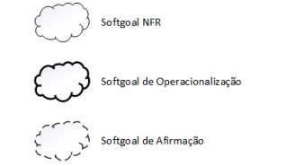
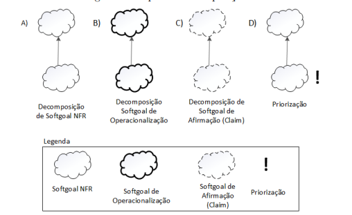
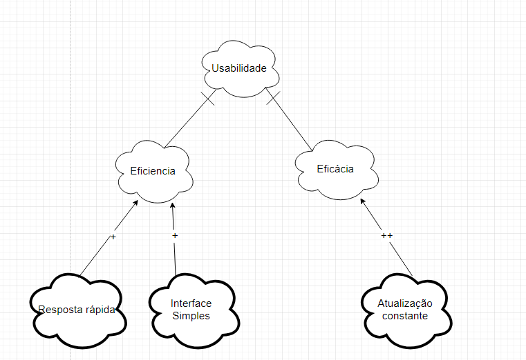
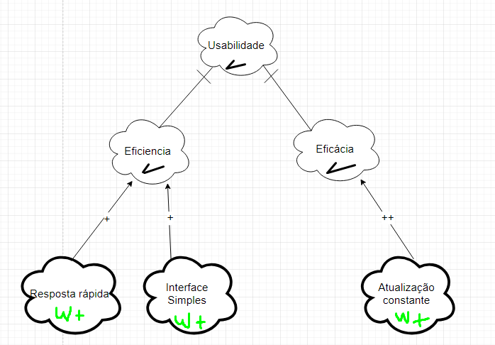
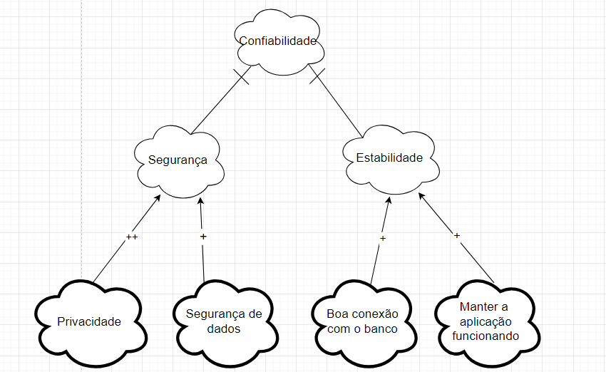
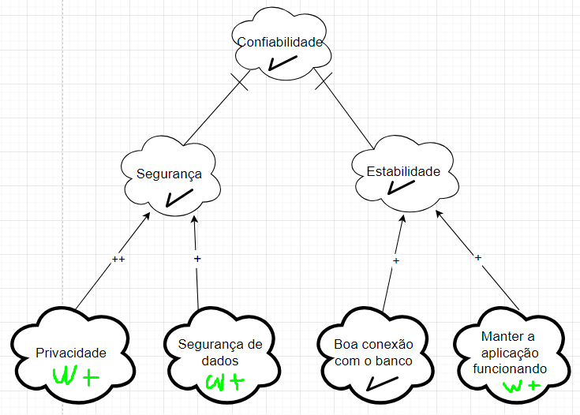
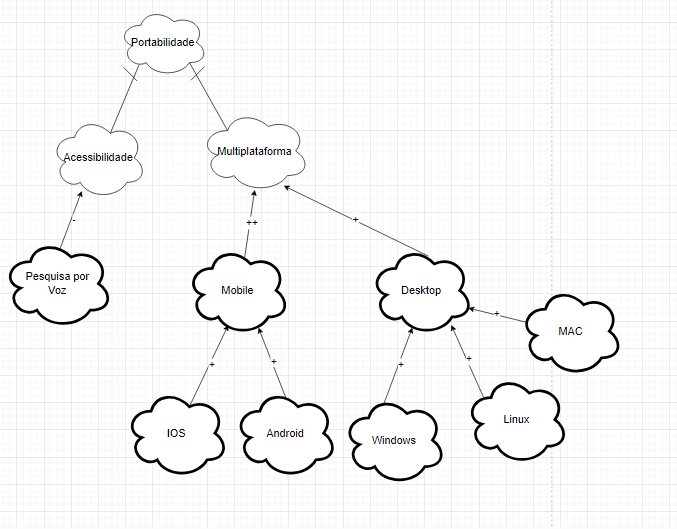
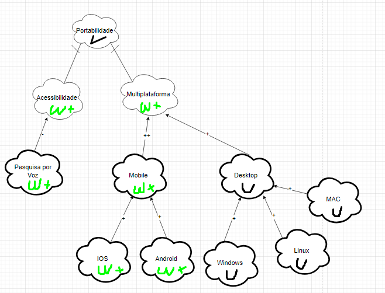

NFR Framework
Introdução
O NFR Framework é uma ferramenta valiosa para representar e analisar Requisitos Não-Funcionais, com foco na implementação de resoluções específicas. Esse framework considera as características gerais do sistema e seu domínio para realizar essa tarefa. No NFR Framework, utiliza-se o modelo Softgoal Interdependency Graph (SIG) para facilitar a visualização e a interdependência dos requisitos.
Tipos de Softgoal
Existem três categorias de softgoals conhecidas como: Softgoals NFR, Softgoals de Operacionalização e Softgoals de Afirmação. Cada uma delas é explicada a seguir:
Softgoals NFR: representam os Requisitos Não-Funcionais e podem ser interconectados. Eles são organizados em catálogos e apresentados de forma hierárquica durante o desenvolvimento do projeto (CHUNG et al., 2000).
Softgoals de Operacionalização: representações de soluções de implementação destinadas a atender aos softgoals NFR ou a outros softgoals de operacionalização. Essas soluções englobam operações, processos, representações de dados, estruturação e restrições no sistema-alvo, com o objetivo de atender às necessidades indicadas pelos softgoals NFR e de operacionalização (CHUNG et al., 2000).
Softgoals de Afirmação: permitem que as características do domínio, como prioridades e carga de trabalho, sejam consideradas e adequadamente incorporadas ao processo de tomada de decisão. Eles servem como justificativas para apoiar ou contestar a forma como os softgoals são priorizados, refinados e os componentes são selecionados. Os softgoals de afirmação oferecem razões para as decisões de desenvolvimento, tornando mais fácil a revisão, a justificação e a modificação do sistema, bem como a melhoria da rastreabilidade (CHUNG et al., 2000).
Figura 1 - Tipos de Softgoal

Fonte: (SILVA, 2019)
Interdependências
As interdependências são definições para as associações que ocorrem entre softgoals. Tais são divididas em decomposições e contribuições:
Decomposições
As decomposições podem ocorrer em todos os níveis de abstração: Softgoals de NFR, de Operacionalização e de Afirmação. Nas três primeiras decomposições, os softgoals são subdivididos em softgoals especificados (SILVA, 2019). Os quatro tipos estão explicitados na figura 2.
- Decomposição NFR: ajuda a dividir vicissitudes primordiais em partes menores, o que reduz as ambiguidades e facilita a priorização.
- Decomposição de Operacionalização: tem por finalidade refinar uma solução geral em soluções particulares.
- Decomposição de Afirmação: serve como afirmação ou negação de justificativas específicas do projeto.
- Decomposição de Priorização: trata-se de uma decomposição especial, na qual o softgoal é refinado em outro softgoal de mesmo tipo e tópico. No entanto, associa-se uma prioridade.
Figura 2 - Tipos de Decomposição

Fonte: (SILVA, 2019)
Contribuições
Num NFR Framework, os softgoals se especializam cada vez mais. Por conseguinte, o um softgoal derivado de outro pode contribuir de forma integral ou truncada, e também de forma positiva ou negativa, para o softgoal do qual ele derivou. Portanto, listar-se-á os tipos de contribuição.
- AND: se os softgoals derivados forem satisfeitos, o softgoal primordial também será.
- OR: se algum dos softgoals derivados forem satisfeitos, o softgoal primordial também será.
- MAKE(++): um softgoal originado contribui de forma plenamente positiva, logo o softgoal original também será satisfeito.
- BREAK(--): um softgoal originado contribui de forma plenamente negativa, logo o softgoal original será negado.
- HELP(+): um softgoal originado realiza uma contribuição restritamente positiva, o que reflete da mesma forma e na mesma intensidade no softgoal primordial.
- HURT(-): um softgoal originado realiza uma contribuição restritamente negativa, o que reflete da mesma forma e na mesma intensidade no softgoal primordial.
- UNKNOWN(?): contribuição incógnita.
- EQUALS: relação direta entre as satisfações do softgoal derivado e a do primordial.
- SOME: a forma de contribuição é conhecida, no entanto, a intensidade dessa contribuição é desconhecida.
Propagação de Impactos
A propagação de impactos no NFR Framework envolve a identificação das relações de dependência entre os requisitos não funcionais, bem como a análise de como uma mudança em um requisito pode afetar outros requisitos relacionados. Isso requer uma compreensão clara das interações entre os requisitos, bem como a capacidade de avaliar as prioridades e trade-offs entre eles. Ao considerar a propagação de impactos, os engenheiros de requisitos podem tomar decisões informadas sobre mudanças e gerenciar os possíveis efeitos colaterais de forma eficaz. A seguir são apresentados os tipos de softgoals de impacto e suas respectivas notações:
Figura 3 - Tipos de Propagação
Fonte: (SILVA, 2019)
- ✓ (satisfeito): Indica que um requisito não funcional contribui positivamente para a satisfação de outro requisito.
- 𝒲+ (fracamente satisfeito): indica uma relação de impacto positiva, mas menos forte do que a notação ✓.
- X (negado): Indica que um requisito não funcional afeta negativamente outro requisito, negando ou contradizendo sua realização.
- 𝒲- (fracamente negado): Similar à notação X, mas com uma relação de negação mais fraca.
- e (conflitante): Indica uma relação de conflito entre requisitos não funcionais. Isso significa que os requisitos possuem características positivas e negativas.
- u (indeterminado): Uma relação indeterminada ou desconhecida entre requisitos não funcionais. Isso ocorre quando não há informações suficientes para determinar o impacto de um requisito em outro.
NFR 01 - Usabilidade
Tabela 1 - Cartão de Especificação 1
| Tópico | Informação |
|---|---|
| Descrição | Usabilidade refere-se à capacidade do sistema de entregar uma boa usabilidade para os usuários do aplicativo do "Sinesp Cidadão". |
| Justificativa | Uma boa Usabilidade é fundamental para garantir que os usuários possam utilizar o aplicativo com eficiência e garantir uma satisfação do usuário, aumentando a acessibilidade e por consequência tendo uma redução de erros. |
| Origem do Requisito | Requisitos elicitados - RNF01 e RNF05 |
| Critério de Aceitação | O sistema deve ser capaz de ter uma boa eficiência e ser capaz de realizar as ações requisitadas pelo usuário de maneira rápida. |
| Dependência | Nenhuma |
| Prioridade | Alta |
| Conflitos | Nenhum |
| História | 26/05/2024 |
Autor: Italo Bruno

Autor: Italo Bruno
Propagação dos Impactos - Usabilidade

Autor: Italo Bruno
NFR 02 - Confiabilidade
Tabela 2 - Cartão de Especificação 2
| Tópico | Informação |
|---|---|
| Descrição | Segurança refere-se à capacidade do sistema de entregar uma segurança e privacidade para os usuários do aplicativo do "Sinesp Cidadão". |
| Justificativa | Uma boa Segurança é fundamental para garantir que os usuários possam utilizar o aplicativo de maneira tranquila sem se preocupar com a segurança de seus dados e informações pessoais. |
| Origem do Requisito | Requisitos elicitados - RNF02, RNF03 |
| Critério de Aceitação | O sistema deve ser capaz de ter uma boa segurança e ter uma boa privacidade de dados baseado no que o usuário necessitar. |
| Dependência | Nenhuma |
| Prioridade | Muito Alta |
| Conflitos | Nenhum |
| História | 26/05/2024 |
Autor: Italo Bruno

Autor: Italo Bruno
Propagação dos Impactos - Confiabilidade

Autor: Italo Bruno
NFR 03 - Portabilidade
Tabela 3 - Cartão de Especificação 3
| Tópico | Informação |
|---|---|
| Descrição | Portabilidade refere-se à capacidade do sistema de ser utilizado em vários sistemas diferentes. |
| Justificativa | Uma boa Portabilidade é fundamental para garantir que qualquer usuário possa utilizar o aplicativo, independente do que ele tenha para uso. |
| Origem do Requisito | Requisitos - RNF08 |
| Critério de Aceitação | O sistema deve ser capaz de ser utilizado ao menos em android IOS e em computadores Windows, Linux e MAC. |
| Dependência | Nenhuma |
| Prioridade | Média |
| Conflitos | Nenhum |
| História | 26/05/2024 |
Autor: Italo Bruno

Autor: Italo Bruno
Propagação dos Impactos - Portabilidade

Autor: Italo Bruno
Bibliografia
PAIM, F. R. S., CASTRO, J. F. B. Enhancing Data Warehouse Design with the NFR Framework. Centro de Informática UFPE, Recife, 2019. Disponível em: http://wer.inf.puc-rio.br/WERpapers/artigos/artigos_WER02/paim.pdf.
CHUNG, L., NIXON, B. A., YU, E., MYLOPOULOS, J. Non-functional requirementsin software engineering. Springer Science & Business Media: [S.l.], 2000. v. 5.
Histórico de Versões
| Versão | Data | Descrição | Autor | Revisor |
|---|---|---|---|---|
1.0 |
25/05/2024 | Criação do documento NFR | Italo Bruno | |
1.1 |
26/05/2024 | Atualização com os cartões de especificação | Italo Bruno | Flávio Melo |
1.2 |
27/05/2024 | Atualização com os SIG e Propagação | Italo Bruno | Flávio Melo |
1.3 |
27/06/2024 | Correção do artefato. | Italo Bruno |